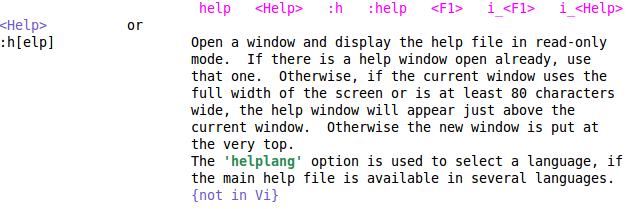
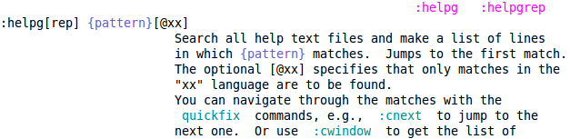

Vim Recipes ‣ Basics ‣ Getting Help
You want help with Vim but don't know where to look. Or, you've found help but find the output of the online help confusing.
Look up a topic in the online help with :help topic. Search it with the :helpgrep pattern command.
When requesting help for a subject use <Ctrl>+d to auto complete what you've typed. For example, :help :h<Ctrl>+d shows a list of help topics for commands starting with :h.
The :help topic displays documentation for the tag named topic in the Vim documentation. The tags are named with the following convention:
| Type of Topic | Prepend | Example |
|---|---|---|
| Normal mode command | (nothing) | :help x |
| Visual mode command | v | :help v_u |
| Insert mode command | i | :help i_<Esc> |
| Command-line command | : | :help :quit |
| Command-line editing | c | :help c_<Del> |
| Vim command argument | - | :help -r |
| Option | ' | :help 'textwidth' |
(The table above is excerpted from the Vim online help).
The documentation itself also uses several conventions that may not be immediately obvious. For example, :help help displays the followingIf you're using a different colour scheme the colours may be different.:
The strings in pink are synonymous tags for the current entry. For example, :help <F1> locates the same entry as :help help.
The blue <Help> label indicates that in GVim the Help menu is the GUI equivalent of this command.
The :h[elp] notation uses square brackets to indicate the optional portion of the command. Command-line commands can be shortened to the point that they are still unambiguous. In this case, :help can be shortened to :h or :hel.
The green text ('helplang') indicates an option. It's also a hyperlink to an explanation of the option, so if your cursor is over it you can use <Ctrl>+] to follow it.
The screenshot above identifies some further conventions to be aware of.
The {pattern} notation describes a variable, i.e. it's a placeholder for text that you must supply.
Again square brackets are denote optional text. In this example, [@xx] means that you can follow the pattern by a two-letter language code.
Lastly, the light green text are also hyperlinks. For example, :cwindow links to documentation for that command.
helpgrep takes a pattern and matches it against the locally installed documentation in much the same way as vimgrep did in Searching Over Multiple Files. If it finds any matches, it adds them to the quick fix listSee the Quick Fix List sidebar in Searching Over Multiple Files for more information, and jumps to the first one.
Once you've followed a hyperlink (with <Ctrl>+]), you can return to your previous location with <Ctrl>+o. This works in a similar fashion to a web browser's Back button, so using this key combination n times will take you to the place you were at n links previously.
If you've installed a Vim addon, you'll need to run :helptags docs-path before helpgrep will see its documentation.